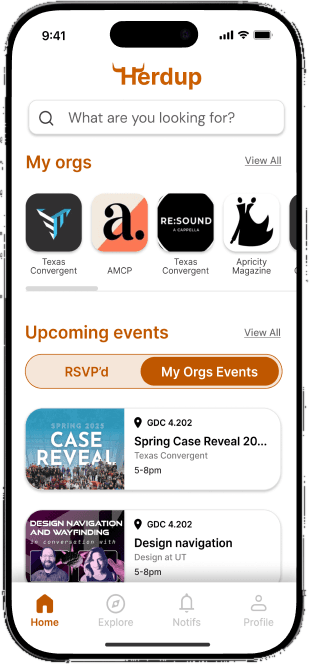
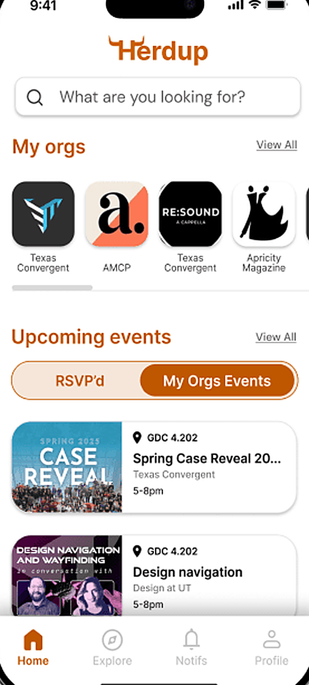

HerdUp App
HerdUp is a mobile app for HornsLink, UT’s student organization platform. It brings HornsLink to students’ phones with a more intuitive interface, helping them easily discover organizations, RSVP to events, and engage with campus life.
- Problem
- HornsLink’s weak mobile experience and complex navigation make it hard for students, especially freshmen and transfers, to find organizations that match their interests.
- My role
- As a UX designer on the Texas Convergent team, I worked on HerdUp from research through MVP design and usability testing. I finalized the onboarding screens and designed the home, organization discovery, organization profile, and user profile screens.
- What I did
- Survey of UT students (quantitative + open-ended) · 3 user archetypes · low-fi wireframes → high-fi designs · component library · usability tests with 3 participants
- Key decision
- Lead with interest-based discovery instead of search, because 88% of respondents found organizations through scattered channels, and new students often don’t know what to search for yet.
- Outcome
- Designed the HerdUp MVP (onboarding, home, discovery, organization profiles, and user profiles) plus a component library. The MVP hasn’t launched yet. In usability testing, all 3 participants found their RSVP’d events right away, and 2 of 3 said HerdUp was faster or easier to use than HornsLink. We then refined button labels, added an “open to everyone” filter, and moved “My Orgs” to the top.
- Success metrics
- Discovery-to-RSVP conversion · freshman involvement rate (new students joining at least one organization) · time to find a matching organizationMetrics we defined to measure success, not results achieved yet.


Challenge
HornsLink is UT's main platform for discovering student organizations and events, but its poor mobile experience and complex navigation make it difficult for students, especially freshmen and transfers, to quickly find organizations that align with their interests, creating barriers when first getting involved on campus.
Outcome
We designed an MVP of the HornsLink mobile app, built around how students actually find organizations: interest-based discovery, clearer organization profiles, and a shorter path from discovering an organization to exploring its events and RSVPing.
Usability test results: We tested the designs with 3 UT students across six tasks: first impressions, finding orgs by interest, finding your orgs’ events, finding events open to everyone, finding events you’ve RSVP’d to, and exploring all orgs.
- What worked: all 3 found their RSVP’d events right away and liked seeing events open to everyone on the home page. 2 of 3 said HerdUp was faster or easier to navigate than HornsLink, and 2 said they’d keep using it as sophomores.
- Labels caused confusion: one participant read “My Orgs” as recommended orgs rather than ones they’d joined, and another said the wording for upcoming events vs. “My Org Events” needed fixing.
- Browsing beats searching: 2 of 3 started from categories rather than search, so category names need to match the orgs UT actually has (for example, “Animals” → “Nature”).
- Finding everything: participants wanted a way to see all orgs, a filter for orgs open to everyone, and search that covers events as well as orgs.
- Reminders over announcements: one participant wanted notifications like “happening in 30 minutes” instead of general announcements.
What we changed after testing:
- Clearer UX writing: renamed buttons and labels, including the events toggle, so it’s obvious what each one does.
- An “open to everyone” filter: so students can find orgs they can join without scrolling through every listing.
- A clearer hierarchy: moved “My Orgs” to the top of the home page, so the orgs students already belong to come first.
Process
Collaborating with Stakeholders to Prioritize Features
We met regularly with our client and stakeholders to align on goals, review design directions, and prioritize features. Each iteration included internal critique with our design lead before presenting updates, ensuring feedback was incorporated early and consistently throughout the design process.
User Research
We conducted surveys with UT students to understand how they discover organizations and engage with campus life, using a mix of quantitative questions and open-ended responses. Key insights included:
of respondents discover organizations through fragmented channels like Instagram, friends, and tabling, which can lead to missed opportunities and a weaker sense of belonging.
of respondents were freshmen actively seeking involvement, highlighting the need for stronger support during early exploration.
and "networking" emerged as the primary motivators for joining organizations, over any single organization's mission.
These insights informed design decisions around personalized discovery and pathways that support both efficient exploration and stronger community connection.
User Archetypes & Needs
We synthesized research into core user groups to guide design decisions:
Students New to Campus Life
Need a clear way to understand what organizations exist and which ones fit their interests.
Students Seeking Specific Interests
Need a way to quickly surface organizations that match hobbies, majors, or career goals without sifting through dozens of options.
Students Representing Organizations
Need a simple, effective way to reach the right audience and increase visibility among students who may not discover them otherwise.
Exploring Onboarding and Discovery Flows for Campus Involvement
We started with low-fidelity wireframes to explore initial onboarding and discovery flows. As we tested early concepts, we iterated on the designs and shifted focus toward simplifying navigation and strengthening the path from discovery to engagement, particularly around organization profiles and RSVPs. This helped clarify key user journeys before moving into higher fidelity design.
HerdUp is faster and more convenient.
— Usability test participant (from session notes)[HornsLink was] confusing because some orgs aren’t running, but I couldn’t see events going on.
— Usability test participant (from session notes)Structuring the Organization Discovery and Engagement Experience
Using the user flows as a foundation, we created low-fidelity wireframes to establish structure, layout, and core functionality. These early sketches allowed us to visualize key screens and interaction patterns quickly.
Designing Intuitive Interfaces for Finding and Joining Campus Organizations
I contributed to finalizing onboarding screens and designing key surfaces including the home page, organization discovery page, organization profile page, and user profile page. The high-fidelity designs emphasize clarity, hierarchy, and usability to reduce cognitive load and make campus involvement easier to navigate.
Establishing a Consistent and Accessible Visual System for Campus Platforms
HerdUp needed to feel like part of HornsLink and UT, not a separate product students would have to learn. We built on the existing UT brand, extending its colors with accessible feedback states, and switched to DM Sans so organization names and event details stay readable on a phone. We also made standardized components for the pieces students see over and over while browsing on mobile: organization cards, event listings, and RSVP actions.
Prioritization & tradeoffs
- Built first: interest-based discovery, organization profiles, and the RSVP path. Early testing moved our focus from broad onboarding to the path from discovery to engagement.
- Scope: nothing was cut. We designed the full planned MVP scope, then used testing to refine it rather than trim it.
- Why: the semester’s goal was an App Store MVP covering three things: browsing organizations, personalized event recommendations, and managing involvement in one place. We set priorities against that goal in regular reviews with our client.
- Working with product and engineering: I worked with the product team to run usability testing, and with engineers to turn the designs into a functional MVP.
Conclusion
Through research-driven design, HerdUp reimagines how students discover and engage with organizations on campus. By understanding the needs of new students, interest-based seekers, and organization representatives, we were able to prioritize features that simplify discovery, improve relevance, and increase visibility. My contributions to onboarding and key screens, including the home page, organization profiles, user profiles, and discovery flow, helped create a cohesive, user-centered experience that makes campus involvement easier, faster, and more engaging. Moving forward, these designs provide a strong foundation for further iterations and testing with real students.